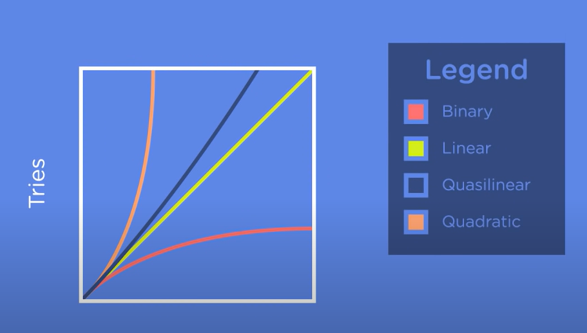

Algorithm
An Algorithm is an set of steps or instruction for completing a task. Algorithm definition must contain a specific set of instructions in a particular order
Example: Linear Search or Sequential Search or Simple Search
- Start at the beginning
- Move Sequentially
- Compare current value to target
- Reach end of list
Explanation: If we have a list of 10 numbers from 1 to 10 (in the list).And we need to find a number 10 than
this search algorithm will search from the beginning to end by comparing the each elements against the number 10,
at last it will find at index 9, with element 10 in it. If the step 3 and step 2 are changed than algorithm will 1st move to 2nd element and look for values, which will result in failure if we are looking for number 1. Thats the reason algorithm should have "Specific set of instructions in a particular order"
Guidelines to an Algorithm
- Clearly defined problem statement, input, and output
- The steps in the algorithm need to be in a very specific order
- The steps also need to be distinct
- The algorithm should produce a result
(If it doesnt produce a result than we will not know whether its working or not)
- The algorithm should complete in a finite amount of time
Efficiency
- Efficiency measured by time is also called as "Time Complexity". Its a measure of how long it takes
the algorithm to run.
- Second measure of efficiency is called as "Space Complexity". It deals with the amount to memory it takes to complete the task by an algorithm.
- Linear Search: Elements in this algorithm can be in sorted or unsorted order. As it gonna compare each element by the required value. It is efficient whenever the number of elements are less in number.
- Binary Search: Elements in this algorithm should be in sorted order. As it gonna compare the element by the required value from middle of the total elements (n/2 order), than check whether the required number is greater or less than that,and repeat the same until it find the number. It is not efficient whenever the number of elements are less in number. Because we need to sort the elements first and then do the binary search. This is efficient when the number of elements are large
Big O
Theoretical definition of the complexity of an algorithm as a function of the size. (Big O is a notation used to describe complexity)
Example: O(n) -- Where "O" is an Order of magnitude of complexity, "n" is a function of the size.
- Linear Search Time Complexity is O(n) - Where "n" number of tries for finding the "nth" element
- Binary Search Time Complexity is O(log n) - Where few tries were made to find the "nth"element
- Linear Search Space Complexity is O(1) - O(1) often called as constant. Only 1 time data is read into memory
- Binary Search Space Complexity is O(1) - Only 1 time data is read into memory
Why log(n)
- 2*1 = 2, 2*2 = 4, 2*3 = 8, which we call as exponential.
- Inverse of exponential is logrithamic.
- log22 = 1, log24 = 2, log28 = 3
- We can see now briefly that how many tries the binary search algorithm is taking to find a value
- Target = 16, BS starts from 8, than 12, than 14, than 15 atlast 16 which is 5 tries, which is equal to log216 + 1
- If target is 32 than number of tries the BS take is log232 + 1
- Where can see clearly that it takes log2n + 1 tries to find the "nth" value.
- If we plot the graph for both linear and binary search than we can see clealy that binary search graph is below the linear search graph. Thats why BS is often called as "Sublinear"
Various Time and Space Complexity

- Binary - O(log n)
- Linear - O(n)
- Quasilinear - O(n log n)
- Quadratic - O(n2)
Note: X2 - is called as quadratic equation where power is 2.
Where we can expect these kind of runtime in practical use?
Sorting Algorithm is the one place where we can see these kind of runtime.
- Merge Sort has worst case runtime of O(n log n)
- The runtime we looked at so far are called as "Polynomial Runtime".
- An algorithm is considered to have Polynomial Runtime, if a given value of n its worst case runtime is in the form of O(n^k)
- where k = 2 is Quadratic Runtime
- where k = 3 is Cubic Runtime
- All are is in the form of n raised to some power
- Anything that falls under this k power or bound to this are considered to have "Polynomial Runtime"
- Algorithms within upper bound or runtime with a big O value (that is polynomial) are considered as efficient algorithms and likely to be used in practice.

Exponential Algorithm
"Exponential Algorithms" where n increases slightly and the number of operations increases exponentially. These algorithms are expensive in runtime so considered as not efficient.
- Exponential Algorithm : O(Xn)
- Lets assume that we need to break into a locker which has a padlock on it, where we forgot the code. It has 2 digit code and code starts from 0 to 9. Normally we used to keep 1st dial as zero and try to change the values for second dial from 0 to 9. Like wise we will try 0 to 9 of 1st dial and change the values for second dial from 0 to 9
- The password combination for 2 digit padlock is 0 to 99. This can be generalized as 102.And searching through each individual value until we stumbble on the right one is a strategy called as "Brute Force". And Brute Force algorithm have exponential runtime.
- Here we used two dial so n = 2, each dial as 10 values. For two dials it is 10n.
- The reason that this algorithm is so inefficient is because if we add one more dial on the lock. Thereby increasing (n = 3 and 103 which is 1000 values) the number of operations significantly. If n = 4 than it become 10000
- As n increases then the number of operations increases exponentially to a point where it is unsolvable in a realistic amount of time.
Exponential Algorithm : Traveling Salesman

Given a list of cities A, B, and C, where we need to find the shortest path between each cities and return to the city where it started.
- As we have only 3 cities the total number of combination for shortest path is 6
- If we increase the cities to 4 than our combination will be 24
- The mathematical relation that defines this is called as "Factorial", which is written as "n!".
- n! is wriiten as n(n-1)(n-2)....(2)(1)... until it reaches 1
- Ex: 3! = 3*2*1 => 6. where 4! = 4*3*2*1 => 24
- In solving the traveling salesman, the most efficient algorithm will have a "Factorial Runtime" or "Combinatorial Runtime".
- At low values of n, algorithm with factorial runtime maybe used but for high values of n its practically impossible to solve the problem.
- Runtime Complexity of factorial algorithm is O(n!)

Git Hub for Python code